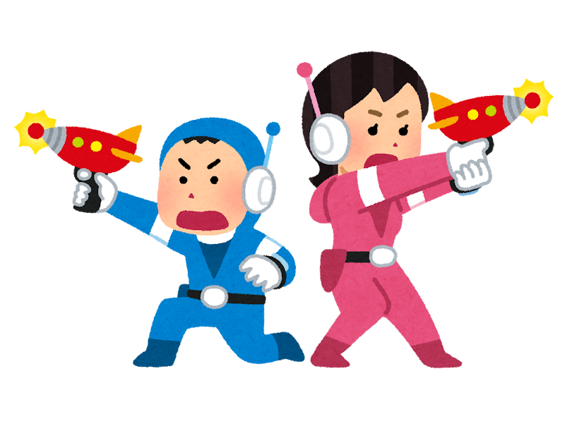

そんなこんなで
鬼退治!!
start
遊び方
お題の文字を打ち込んでエンターキーを押せ！
半角、全角、平仮名は平仮名、漢字は漢字、数字は数字だ！
見事、鬼の体力を０にすればゲームクリアだ！
参考にしたサイト
『 参考にしたサイト 』
フォームをクリア・空にする方法。input・textarea【Javascript】
時間差でフェードインさせる方法【animation】
transform-origin - CSS: カスケーディングスタイルシート | MDN
クリックでclassを付与して数秒後にクラスを削除したい
テキスト入力欄に最初からカーソルを入れる(フォーカスを与える)方法 - JavaScript TIPSふぁくとりー
【JavaScript】入力フォームで IME 確定時の Enter 誤判定を何とかする
CSSStyleDeclaration.removeProperty() - Web API - MDN